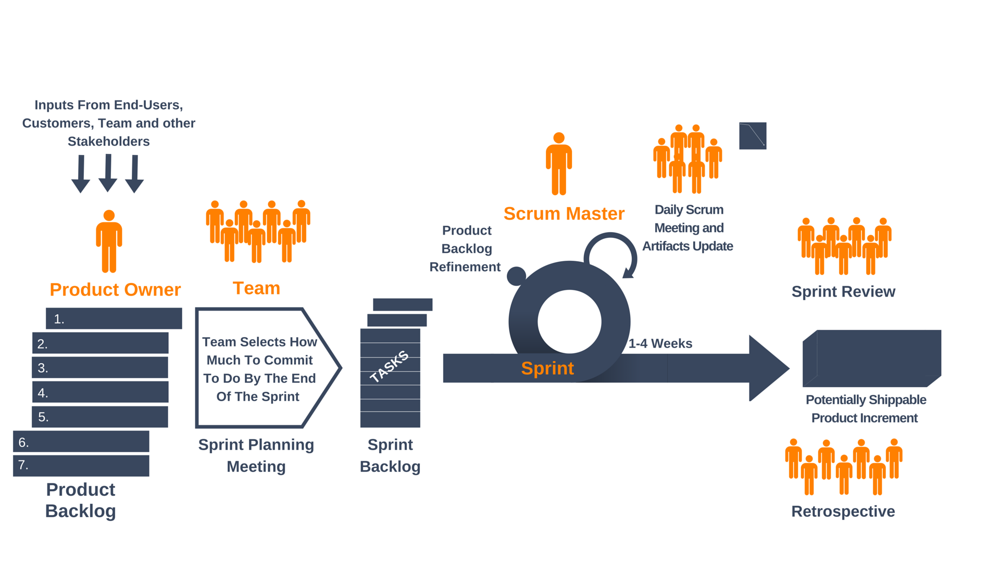

Desenvolupament de software amb
AGILE
EL MÓN DE LES IDEES
On tot és perfecte
#1
No hi ha imprevistos ni canvis de requisits
#2
Casos d'ús molt específics i simples
#3
Fases distingides del procés de creació d'un projecte
Recull d'especificacions ➡ Arquitectura ➡ Documentació ➡ Implementació ➡ Test ➡ Release
#4
El codi és el més important
EL MÓN REAL
On tot és imperfecte
#1
Sistema ASM (A Salto de Mata)
#2
Funcionalitats "on demand"
Si el client vol cavalls més ràpids, farem cavalls més ràpids
#3
Estimacions "A ojo de buen cubero"
#4
Implementacións ""full-stack"" i sense divisió de tasques
#5
Codi amb propietari
#6
Males pràctiques
Codi espagueti, sense tests, edició de fitxers del servidor de producció amb SSH i el vim...
#7
Falta de comunicació
Quins són els objectius de la xerrada?
#1
Donar una perspectiva real, en primera persona, d'una transició cap a AGILE
#2
Remarcar els problemes més freqüents
#3
Canvi de mentalitat
- Els requeriments poden i és bo que canviïn durant el procés de desenvolupament
- El temps invertit en comunicació és el més ben invertit
PRESENTEM AGILE
El terme AGILE es refereix a cualsevol procés de desenvolupament que apliqui els conceptes de l'Agile Manifesto
Individus i interaccions
per sobre de processos i eines
Programari que funciona
per sobre de documentació exhaustiva
Col·laboració amb el client
per sobre de negociació de contractes
Resposta al canvi
per sobre de cenyir-se a una planificació
Com és que guanya popularitat? Quins són els seus beneficis?
Més capacitat de reacció
Producte més fidel a les necessitats del client
Inclusivitat, tothom participa i se sent part del producte
No es cometen errors molt costosos
Ok pero... Per on començo?
AGILE FRAMEWORKS
-
SCRUM
-
Extreme programming
-
DSDM
-
Adaptive Software Development
-
Crystal
-
Feature-Driven Development
-
Pragmatic Programming
-
Etc...
